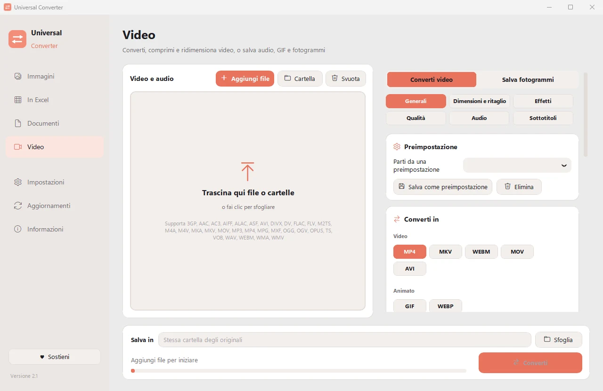

Comprimere un video senza caricarlo
I video del telefono e le registrazioni dello schermo sono spesso molto più grandi del necessario. Universal Converter li ricodifica con codec moderni come H.265 e AV1, così occupano molto meno spazio e restano belli.
Scarica per Windows
Gratis · Windows 10 e 11, 64 bit
Come fare
- Apri Universal Converter e scegli Video a sinistra.
- Trascina i file o un'intera cartella nella finestra, oppure fai clic su Aggiungi file.
- Scegli MP4 e abbassa la qualità finché la dimensione ti va bene. Aiutano le impostazioni pronte per telefoni, web e archiviazione.
- Fai clic su Converti. I nuovi file vengono salvati accanto agli originali o nella cartella che scegli.

Perché offline?
Universal Converter lavora sul tuo computer. I tuoi file restano privati, i file grandi non sono un problema e funziona senza connessione a internet.
Altre cose che può fare
- Convertire MKV, MOV, AVI e WMV in MP4
- Salvare l'audio di un video in MP3
- Creare una GIF da un video
- Estrarre tabelle da un PDF in Excel
- Unire foto in un unico PDF
- Convertire un PDF in Word
- Unire più file in un PDF
- Copiare il testo da un'immagine (OCR)
- Convertire WEBP in JPG o PNG
- Ridimensionare immagini o ridurle a una dimensione del file